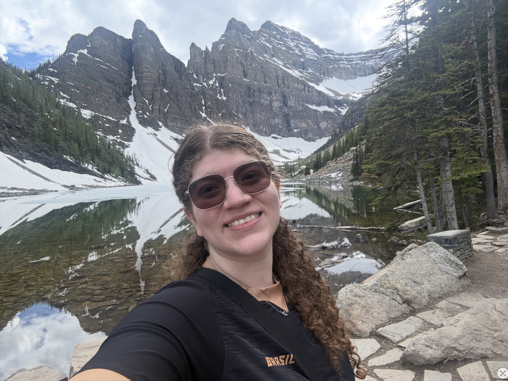

About me

I’m a Brazilian immigrant who has been living in Canada since 2022. I initially moved to British Columbia, where I got to live near Vancouver and also on Vancouver Island, and now I’ve decided to explore the eastern side as well, so here I am living on my 2nd province in this beautiful country.
I’ve always enjoyed challenging myself, and the past few years have reinforced the idea that changes are necessary to become the person I want to be and the IMD program represents a step out of my comfort zone. Growing up, I avoided computers as much as I could, and now I need to learn how to express myself visually, with not many artistic skills, using tools that I used to avoid, and in a language that I’m still not fully confident in. Sounds like fun!
"A ship in harbor is safe, but that is not what ships are built for"
-John A. Shedd
Hobbies
- Hiking
- Cooking